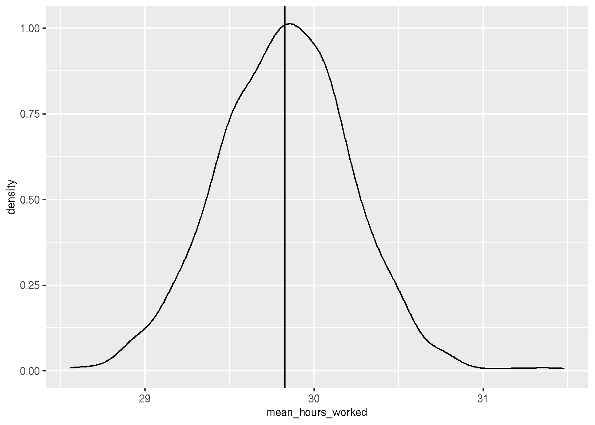
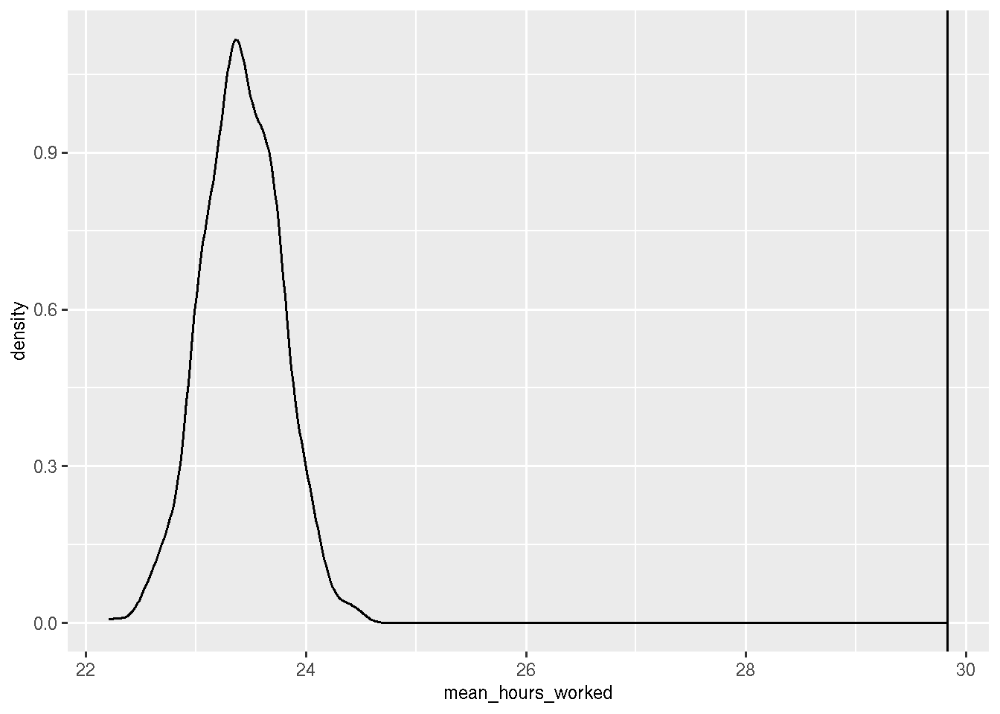
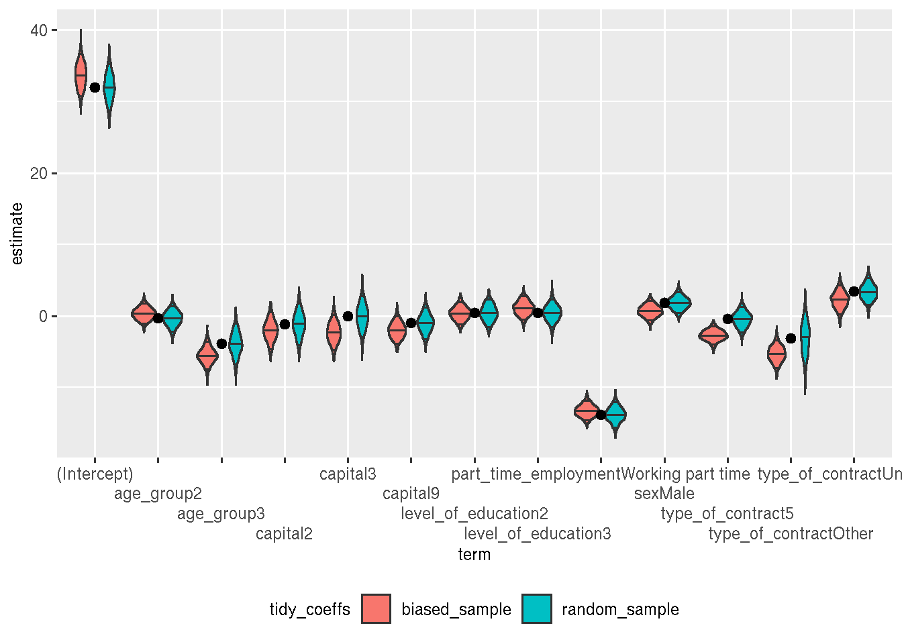

Is it worth the weight?
Intro
Oh man, I did it again. Grab a coffee, this is going to be a long one.
Weights got me confused. The justification for using weights seems simple enough; if you’re working with a sample in which one (or more) strata are over(under)-represented, you should compute weighted univariate statistics. I’ve discussed this already here.
But what about regression and prediction? There does not seem to be a consensus in the literature. So I wanted to experiment with some data and see if it would help.
Spoiler alert: I’m more confused now than before, so maybe stop reading here. But maybe, by reading this blog post, dear reader, you might spot where I am confused and help me? Any help, comments, etc. more than welcome.
Anyway, let’s start by loading the required packages:
library("dplyr")
library("rsample")
library("yardstick")
library("readr")
library("janitor")
library("lubridate")
library("broom")
library("purrr")and also the required dataset. This is a dataset that I have already featured in one of my previous blog posts here, a blog post about synthetic datasets. I’ll reuse the description from this other blog post here:
The Survey on the Population in Relation to Activity operation is a continuous source of information on the characteristics and dynamics of the labour force of the Basque Country. It records the relation to productive activity of the population resident in family households, as well as the changes produced in labour situations; it produces indicators of conjunctural variations in the evolution of the active population; it also estimates the degree of participation of the population in economically non-productive activities. It offers information on the province and capital level.
To make it easy for you to follow along, I have re-uploaded the data here. For the purposes of my analysis, I’ll be focusing on the “Hours Worked” variable. I’ll also assume that the dataset is the entire, complete population, and that I will have to deal with unbiased, randomly sampled individuals, but also with samples that are not randomly sampled.
Let’s read in the data, rename the columns and do some basic data cleaning:
population <- read_csv2("https://raw.githubusercontent.com/rbind/b-rodrigues.github.com/master/public/assets/MICRO_PRA_2021_1.csv")## ℹ Using "','" as decimal and "'.'" as grouping mark. Use `read_delim()` for more control.## Rows: 12757 Columns: 33## ── Column specification ──────────────────────────────────────────────────────────────────────────────────────────────────────────────
## Delimiter: ";"
## chr (10): TERH, EDAD, ENRE, FOCU, BUSQ, GBUSQ, FBUSQ, DISP, PRA2, RACT
## dbl (23): NUMH, AENC, TENC, MUNI, SEXO, LNAC, NACI, LEST, SJUB, SILH, EMPTP,...##
## ℹ Use `spec()` to retrieve the full column specification for this data.
## ℹ Specify the column types or set `show_col_types = FALSE` to quiet this message.col_names_english <- c(
"Household number",
"Year of survey",
"Reference quarter",
"Province",
"Capital",
"Sex",
"Place of birth",
"Age",
"Nationality",
"Level of education",
"Formal education system",
"Professional training",
"Retirement situation",
"Household duties situation",
"Part-time employment",
"Reason for reduced worknig hours",
"Job search",
"Reasons for seeking employment",
"Working hours sought",
"Carry out employment seeking activities",
"Main employment seeking method",
"Months seeking employment",
"Availability",
"Relation to activity (ILO)",
"Relation to activity",
"Main occupation",
"Main activity",
"Main professional situation",
"Main institutional sector",
"Type of contract",
"Hours worked",
"Relationship",
"Elevator")
colnames(population) <- col_names_english
population <- population %>%
clean_names() %>%
filter(!is.na(hours_worked)) %>%
filter(!is.na(part_time_employment)) %>%
mutate(part_time_employment = ifelse(part_time_employment == 1, "Working full time", "Working part time")) %>%
mutate(type_of_contract = ifelse(is.na(type_of_contract), "Unknown", type_of_contract)) %>%
mutate(sex = ifelse(sex == 1, "Male", "Female")) %>%
mutate(age_group = case_when(between(age, 4, 7) ~ "1",
between(age, 8, 12) ~ "2",
age > 12 ~ "3")) %>%
mutate(type_of_contract = ifelse(type_of_contract %in% c(seq(2, 4), 6), "Other", type_of_contract)) %>%
select(capital,
sex,
age_group,
level_of_education,
part_time_employment,
type_of_contract,
hours_worked) %>%
mutate(across(-hours_worked, as.factor)) %>%
mutate(id = row_number())Let’s put some data on the side, for later:
holdout <- population %>%
sample_n(300)
population <- population %>%
filter(!(id %in% holdout$id))This holdout set will be useful later on. I’m now going to compute some sampling weights. This weights will make it easy for me to select biased samples, where part-time workers are over-represented:
set.seed(1234)
beta0 <- -3.6
beta1 <- 2.63
population <- population %>%
mutate(pi_x = exp(beta0 + beta1 * I(part_time_employment == "Working part time")) / (1 + exp(beta0 + beta1 * I(part_time_employment == "Working part time"))))By the way, I’ve found this code here.
Let’s see what happens when I randomly sample from the population and compute some basic frequencies, and then what happens when I sample using the weights. First, the true frequencies of part-time and full-time workers, on the complete population:
population %>%
tabyl(part_time_employment)## part_time_employment n percent
## Working full time 4107 0.8204155
## Working part time 899 0.1795845Now, on a random sample:
sample_n(population, 1000) %>%
tabyl(part_time_employment)## part_time_employment n percent
## Working full time 823 0.823
## Working part time 177 0.177Pretty much the same value, now what happens when I don’t have a random sample:
sample_n(population, 1000, weight = pi_x) %>%
tabyl(part_time_employment)## part_time_employment n percent
## Working full time 409 0.409
## Working part time 591 0.591This might seem obvious, since I have computed the weights such as to over-represent part-time workers. But this problem also affects other variables:
sample_n(population, 1000) %>%
tabyl(sex)## sex n percent
## Female 471 0.471
## Male 529 0.529sample_n(population, 1000, weight = pi_x) %>%
tabyl(sex)## sex n percent
## Female 633 0.633
## Male 367 0.367Because more women work part-time than men, women are now over-represented. The age structure is also different:
sample_n(population, 1000) %>%
tabyl(age_group)## age_group n percent
## 1 181 0.181
## 2 726 0.726
## 3 93 0.093sample_n(population, 1000, weight = pi_x) %>%
tabyl(age_group)## age_group n percent
## 1 215 0.215
## 2 662 0.662
## 3 123 0.123And what about what interests us, the hours worked?
sample_n(population, 1000) %>%
summarise(mean(hours_worked))## # A tibble: 1 × 1
## `mean(hours_worked)`
## <dbl>
## 1 29.9sample_n(population, 1000, weight = pi_x) %>%
summarise(mean(hours_worked))## # A tibble: 1 × 1
## `mean(hours_worked)`
## <dbl>
## 1 23.1Ok, so this is bad, and the way to deal with it would be to computed post-stratification weights.
But let’s go a bit further and see what happens if I rerun this a 1000 times. Maybe I just got very unlucky with my non-random sample? With another sample, maybe things wouldn’t be so bad?
true_mean <- mean(population$hours_worked)
random_samples <- rerun(1000, sample_n(population, 1000))
hours_worked_random_samples <- map_df(.x = random_samples,
~summarise(.x, mean_hours_worked = mean(hours_worked)))
hours_worked_random_samples %>%
summarise(mean(mean_hours_worked), sd(mean_hours_worked))## # A tibble: 1 × 2
## `mean(mean_hours_worked)` `sd(mean_hours_worked)`
## <dbl> <dbl>
## 1 29.8 0.393hours_worked_random_samples %>%
ggplot() +
geom_density(aes(x = mean_hours_worked)) +
geom_vline(xintercept = true_mean)## Warning in grid.Call(C_stringMetric, as.graphicsAnnot(x$label)): X11 used font
## size 25 when 29 was requested
We see that the distribution is centered around the true mean. What about a 1000 biased samples?
biased_samples <- rerun(1000, sample_n(population, 1000, weight = pi_x))
hours_worked_biased_samples <- map_df(.x = biased_samples,
~summarise(.x, mean_hours_worked = mean(hours_worked)))
hours_worked_biased_samples %>%
summarise(mean(mean_hours_worked), sd(mean_hours_worked))## # A tibble: 1 × 2
## `mean(mean_hours_worked)` `sd(mean_hours_worked)`
## <dbl> <dbl>
## 1 23.4 0.355hours_worked_biased_samples %>%
ggplot() +
geom_density(aes(x = mean_hours_worked)) +
geom_vline(xintercept = true_mean)## Warning in grid.Call(C_textBounds, as.graphicsAnnot(x$label), x$x, x$y, : X11
## used font size 25 when 29 was requested
Clearly, the average hours worked are consistently under-estimated. So it’s not a matter of being unlucky with one particular sample.
But what about other tasks, such as prediction and regression? What is the impact there? This is where I started getting confused.
Regression and prediction (with weights?)
Let me first write a function that will do a bunch of things:
- split the data into training and testing sets
- run a linear regression
- predict on the testing set
- return the rmse, the coefficients and the model
run_regression <- function(dataset){
split_unbiased_data <- initial_split(dataset, prop = 0.9)
training_unbiased_data <- training(split_unbiased_data)
testing_unbiased_data <- testing(split_unbiased_data)
linear_model <- lm(hours_worked ~ capital +
sex +
age_group +
level_of_education +
part_time_employment +
type_of_contract,
data = training_unbiased_data)
lm_predictions <- predict(linear_model,
newdata = testing_unbiased_data)
testing_data_lm_predictions <- testing_unbiased_data %>%
mutate(lm_pred = lm_predictions)
lm_rmse <- testing_data_lm_predictions %>%
rmse(hours_worked, lm_pred)
lm_result <- broom::tidy(linear_model)
tribble(~rmse, ~tidy_coeffs, ~model,
lm_rmse$.estimate, lm_result, linear_model)
}Let’s now run this on the 1000 random samples and on the 1000 non-random samples:
many_lms <- map_df(.x = random_samples, ~run_regression(.x))
many_biased_lms <- map_df(.x = biased_samples, ~run_regression(.x))Let’s take a look at the RMSE of both models:
many_lms %>%
summarise(mean(rmse), sd(rmse))## # A tibble: 1 × 2
## `mean(rmse)` `sd(rmse)`
## <dbl> <dbl>
## 1 13.3 1.18many_biased_lms %>%
summarise(mean(rmse), sd(rmse))## # A tibble: 1 × 2
## `mean(rmse)` `sd(rmse)`
## <dbl> <dbl>
## 1 12.1 1.08So… both models perform the same? Hum. What about the coefficients? Well I don’t expect much difference there now, but let’s see:
random_sample_coefs <- many_lms %>%
pull(tidy_coeffs) %>%
bind_rows() %>%
mutate(tidy_coeffs = "random_sample")
biased_sample_coefs <- many_biased_lms %>%
pull(tidy_coeffs) %>%
bind_rows() %>%
mutate(tidy_coeffs = "biased_sample")
true_lm <- lm(hours_worked ~ capital +
sex +
age_group +
level_of_education +
part_time_employment +
type_of_contract,
data = population)
true_lm_coefs <- broom::tidy(true_lm) %>%
mutate(tidy_coeffs = "true")
simulations <- bind_rows(random_sample_coefs,
biased_sample_coefs) Let’s plot the 1000 coefficients for each variable in a nice violin plot:
ggplot() +
geom_violin(data = simulations, aes(y = estimate, x = term, fill = tidy_coeffs),
draw_quantiles = c(0.05, 0.5, 0.95)) +
geom_point(data = true_lm_coefs, aes(y = estimate, x = term), size = 2) +
scale_x_discrete(guide = guide_axis(n.dodge = 4)) +
theme(legend.position = "bottom")## Warning in grid.Call(C_textBounds, as.graphicsAnnot(x$label), x$x, x$y, : X11
## used font size 25 when 29 was requested
The dots are the true coefficients (obtained from a linear regression on the whole data). The coefficients from the random sample are “more often” closer to the true coefficients, but it doesn’t seem to be a lot (the bars in the violins are the 5th, 50th and 95th percentile).
Let’s now see what happens on the holdout set (using the best performing models):
best_unbiased_model <- many_lms %>%
filter(rmse == min(rmse)) %>%
pull(model) %>%
.[[1]]
holdout <- holdout %>%
mutate(unbiased = predict(best_unbiased_model, newdata = holdout))
best_biased_model <- many_biased_lms %>%
filter(rmse == min(rmse)) %>%
pull(model) %>%
.[[1]]
holdout <- holdout %>%
mutate(biased = predict(best_biased_model, newdata = holdout))
holdout %>%
rmse(hours_worked, unbiased)## # A tibble: 1 × 3
## .metric .estimator .estimate
## <chr> <chr> <dbl>
## 1 rmse standard 13.3holdout %>%
rmse(hours_worked, biased)## # A tibble: 1 × 3
## .metric .estimator .estimate
## <chr> <chr> <dbl>
## 1 rmse standard 13.3Again, pretty much no difference… What about hours worked?
holdout %>%
summarise(mean_true = mean(hours_worked),
mean_unbiased = mean(unbiased),
mean_biased = mean(biased))## # A tibble: 1 × 3
## mean_true mean_unbiased mean_biased
## <dbl> <dbl> <dbl>
## 1 30.4 29.9 29.9Same…??? What about coefficients?
bind_cols(broom::tidy(best_unbiased_model),
broom::tidy(best_biased_model)) %>%
select(term...1, estimate...2, std.error...3, estimate...7, std.error...8)## New names:
## * term -> term...1
## * estimate -> estimate...2
## * std.error -> std.error...3
## * statistic -> statistic...4
## * p.value -> p.value...5
## * ...## # A tibble: 13 × 5
## term...1 estimate...2 std.error...3 estimate...7 std.error...8
## <chr> <dbl> <dbl> <dbl> <dbl>
## 1 (Intercept) 30.6 2.11 36.4 1.95
## 2 capital2 0.317 1.91 -3.35 1.72
## 3 capital3 0.501 1.90 -2.66 1.78
## 4 capital9 0.258 1.40 -3.45 1.32
## 5 sexMale 3.54 0.946 -0.649 0.915
## 6 age_group2 0.295 1.29 -0.467 1.09
## 7 age_group3 -3.42 1.82 -5.55 1.45
## 8 level_of_education2 -0.506 1.21 0.439 1.06
## 9 level_of_education3 0.636 1.20 0.545 1.06
## 10 part_time_employmentWo… -13.3 1.23 -14.3 0.960
## 11 type_of_contract5 -0.646 1.20 -1.86 0.982
## 12 type_of_contractOther -5.74 2.60 -4.98 1.63
## 13 type_of_contractUnknown 0.378 1.18 3.17 1.25Again, some differences here (especially for significant coefficients, which makes sense). So I guess you should use weights if you’re interested in the coefficients (and especially their standard deviation). I definitely need to explore this more, and read some more.